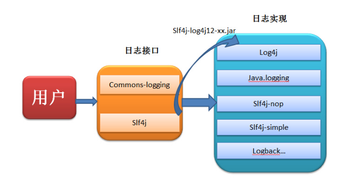
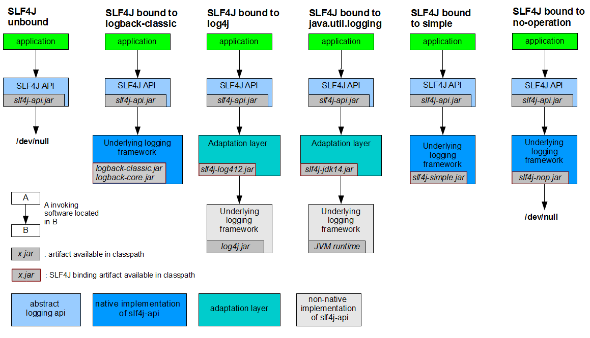

SLF4J 和 Log4j2
小课堂
分享人: 韦杰
目录
1.背景介绍
2.知识剖析
3.常见问题
4.解决方案
5.编码实战
6.扩展思考
7.参考文献
8.更多讨论
1.背景介绍
SLF4J是怎么诞生的?
很久很久以前，Apache说服log4j以及其他的日志按照commons-logging的标准编写，但是由于commons-logging的类加载器有点问题，实现起来也不友好，因此log4j的作者创作了SLF4J，也因此与commons-logging平分天下。到底使用哪一个，由开发者自己决定。
2.知识剖析
1）SLF4J到底是什么？
2）SLF4J的实现原理什么？
1）SLF4J到底是什么？
commons-logging和slf4j都是日志的接口，供用户使用，而没有提供实现。log4j、logback、java.logging才是日志的真正实现。当我们调用接口时，接口的工程会自动寻找恰当的实现，返回一个实现的实例。
2）SLF4J的实现原理什么？
3.常见问题
1）Log4j怎么结合SLF4J？
2）Log4j结合SLF4J有什么优势？
4.解决方案
1）Log4j怎么结合SLF4J？
A.添加SLF4J的jar包
B.添加适配器jar包：slf4j-log4j12
tip：实际只添加适配器jar包就可以了。
2）Log4j结合SLF4J有什么优势？
有数据表明，一个应用程序中大约有4%的代码用来打日志。在代码中，我们经常需要把一些参数作为Debug级别的日志打印出来，方便我们进行调试。项目部署之前我们会把日志的级别调到INFO，项目正式运转的时候就不会打印Debug级别的日志。
但Log4j在这方面做的不太好，用到了isDebugEnable()并在项目刚运行时就拼接字符串存到内存里，这样不仅检查了两次日志级别，并占用了内存资源，导致性能比其他日志实现要差。这种操作会使得我们的代码看起来更像是在打日志而不是在实现某种功能。
通过结合SLF4J，Log4j也可使用参数替代字符串拼接，这样只会检查一次日志级别，且只在需要输出日志的时候才会拼接字符串。代码更优雅、性能也有提升。
5.实战
1）Log4j结合SLF4J
2）Log4j结合SLF4J前后的性能对比
3）Log4j2怎么使用
4）Log4j和Log4j2的性能对比
6.扩展思考
1）为什么要以类名作为logger的名字？
2）Log4j 怎么迁移到 Log4j2？
1）为什么要以类名作为logger的名字？
首先我们要知道，类通常以类代表的对象或者类可以实现的功能来命名，这种命名方式提高了可读性，易于他人 识别。同样的，以类名作为logger的名字可以快速定位产生日志的类，还可以更精确地对每个类的日志级别、输出目的地和输出样式进行调整。
这种命名方式实际有什么作用呢？
A.同名Logger
B.父类Logger
C.Root Logger
2）Log4j 怎么迁移到 Log4j2？
A.前提条件
没有调用Log4j-1.x的内部方法，比如Appenders（），LoggerRepository（）
没有使用代码的方式配置Log4j
没有调用DOMConfigurator或PropertyConfigurator这两个类
B.替换jar包
把 Log4j-1.x.jar 换成 log4j-1.2-api.jar（这个jar包内有log4j-api、log4j-core两个jar包）
C.修改代码
首先要清楚，jar包前缀不一样，版本1是org.apache.log4j，版本2是org.apache.logging.log4j
a.版本1是Logger.getLogger( )，改成版本2的LoggerManager.getLogger( )
b.版本1是Logger.getRootLogger( )，改成版本2的LoggerManager.getRootLogger( )

D.配置文件
log4j.properties换成log4j2.xml
7.参考文献
参考一：Log4j2 官网
参考二：Log4j 迁移到 Log4j2
参考四：SLF4J 官网
8.更多讨论
鸣谢
感谢大家观看
BY : 韦杰